Twisted, HACKMYVM
En esta maquina encontaremos escaneo , esteganoigrafia y lectura de binario
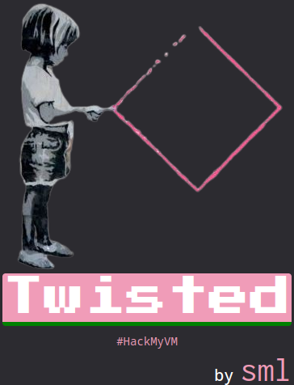
Herramientas y recursos utilizados:
- arp-scan
- nmap
- stegseek
- https://morsecode.world/international/decoder/audio-decoder-adaptive.html
- radare2
- https://reverseengineering.stackexchange.com/questions/15193/radare2-c-output
- https://reverseengineering.stackexchange.com/questions/15244/how-to-use-radare2-to-disassemble-an-executable-file
Scan
Una vez localizada la maquina de la victima realizamos lanzamos a nuestro amigo nmap.
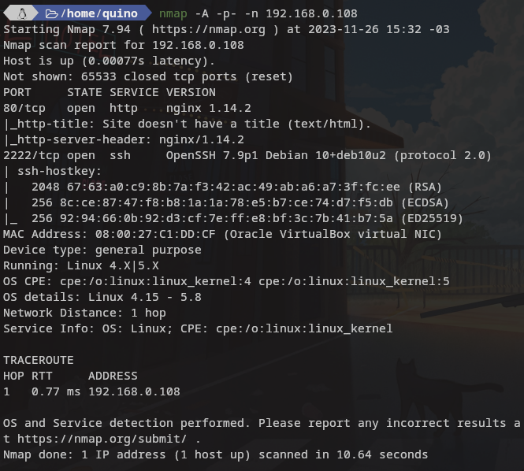
Como podemos ver nos encontramos con el puerto 80 y con el servicio ssh corriendo por el puerto 2222.
Empezamos como siempre por lo facil observando tanto la web como su codigo fuente , el codigo fuente no tiene nada especial solo nos indica que prefiere la imagen de abajo y como a simple vista son iguales vamos a analizar las dos imagenes.
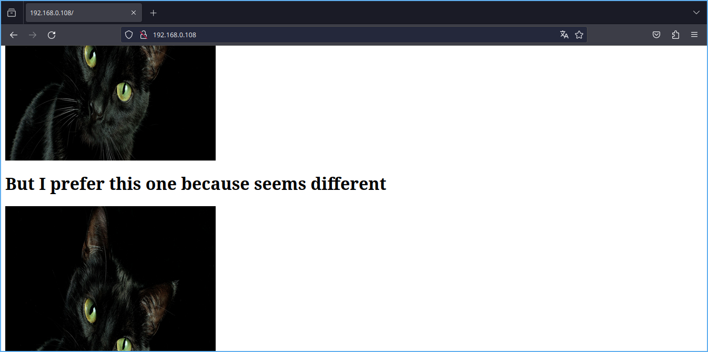
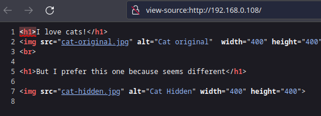
Esteganografia
Primero le paso exiftool sin exito asi que probamos de nuevo con stegseek el cual nos devuelve un txt.
stegseek cat-original.jpg ../../../Descargas/rockyou.txt/rockyou.txt
stegseek cat-hidden.jpg ../../../Descargas/rockyou.txt/rockyou.txt
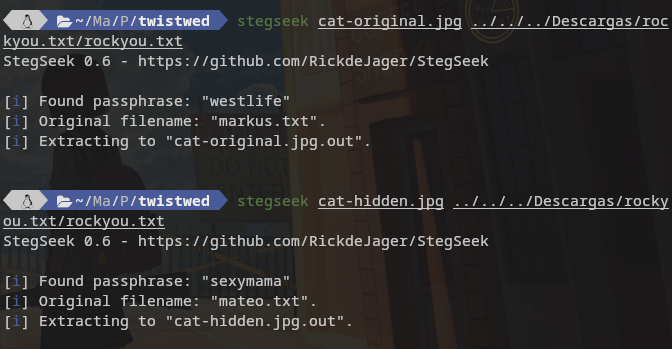
Tambien estamos atentos a los nombres de los txt originales que nos devuelve stegseek.
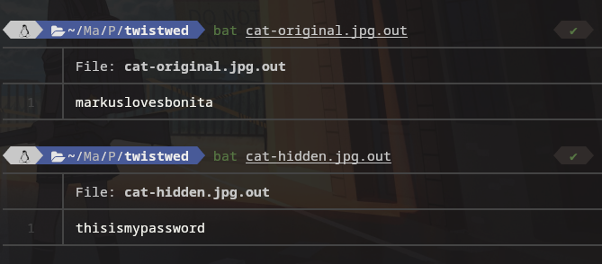
Yo hago login con con el user mateo , en su home hay un .wav que es una trampa y perdida de tiempo el mismo nos lo dice.”CON HUMOR”
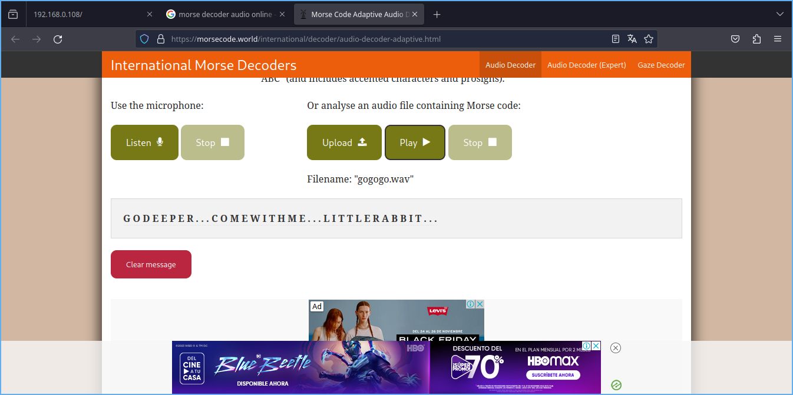
Escalada de privilegios
Para esta parte como de costumbre en estos retos sencillos que me llevan un tiempo ejecutamos:
sudo -l
find / -perm /4000 2>/dev/null
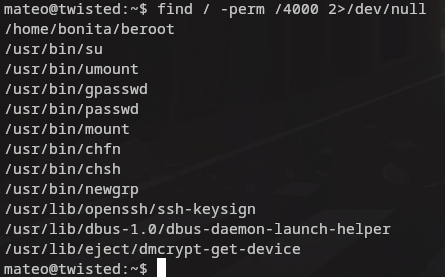
Con find vemos que que existe un archivo llamado beroot con suid pero no consigo llegar a ese archivo , tambien hay otra note.txt en el directorio de markus el cual tampoco leer , lo que me lleva pensar que con este usuario estoy en un agujero de conejo por completo.
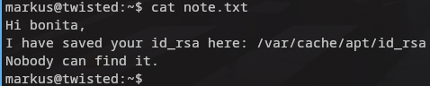
Vuelvo hacia atras para intentar hacer login con markus.
Tengo exito con markus y consigo leer el txt que indica lo siguiente clave id_rsa guardada en …. La copiamos a nuestra maquina cambiamos a 600 los permisos y conectamos con ssh al user bonita.
ssh -i id_rsa bonita@192.168.0.108 -p 2222
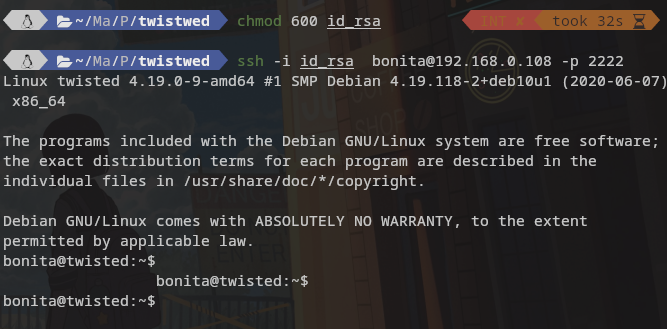
Ejecutamos el binario y nos da error , aqui busque un manual de la maquina para ver que hacer porque ni puta idea en algun walktrough te ponen el codigo que se necesita pero hay que hacerlo por uno mismo con copy paste no aprendes y como he visto que todos hacen uso de ghidra “NSA” me decante por radare2 pese a no tener ni idea de como usarlo.
El que quiera ver porno , subir tik toks y demas adormecimientos que lo haga es libre, pero internet es la puta biblioteca de Alejandria y pocas cosas hay que no se puedan encontrar y aprender.
Levantamos un servidor http con python3 y descargamos el fichero.
python3 -m http.server
Nos abrimos radare2 y ejecutamos lo siguiente:
s main que nos llevara a la funcion principal que todo programa en c tiene pd que nos mostrara el codigo decompilado buscamos la parte donde espera un input “scanf” en c o buscamos la cadena de texto que nos muestra cuando lo ejecutamos cerca de esa parte esta el valor que buscamos. Obvio que hay maneras de hacer que sea mas legible pero repito es mi primera vez y no encontre la forma de hacerlo mas legible como lo hacen los que usan ghidra. La funcion cmp compara el valor introducido con el que esta escrito dentro de esa funcion.
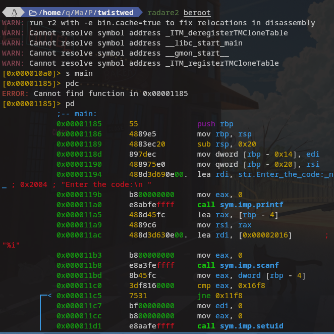
Ahora solo nos queda ir a alguna web a convertir el hexadecimal en decimal para obtener el codigo de beroot que nos dara acceso a root.
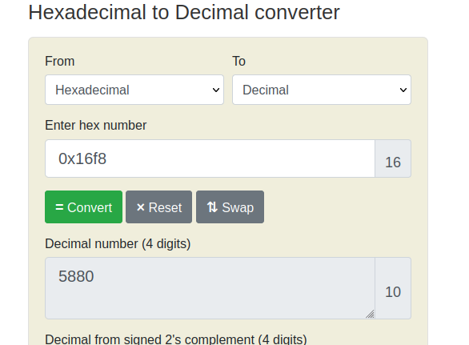
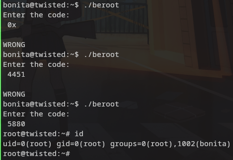
INFO RADARE2
[0x00005430]> pd? |Usage: p[dD][ajbrfils] [sz] [arch] [bits] # Print Disassembly | NOTE: len parameter can be negative | NOTE: Pressing ENTER on empty command will repeat last pd command and also seek to end of disassembled range. | pd N disassemble N instructions | pd -N disassemble N instructions backward | pD N disassemble N bytes | pda disassemble all possible opcodes (byte per byte) | pdb disassemble basic block | pdc pseudo disassembler output in C-like syntax | pdC show comments found in N instructions | pdk disassemble all methods of a class | pdj disassemble to json | pdr recursive disassemble across the function graph | pdf disassemble function | pdi like ‘pi’, with offset and bytes | pdl show instruction sizes | pds[?] disassemble summary (strings, calls, jumps, refs) (see pdsf and pdfs) | pdt disassemble the debugger traces (see atd)
The
pccommand will output n bytes from the current seek (s) as a C array, where n is the Block size (b) or the length mentioned in the command. The output is then can be used to, for example, manipulate the array outside of radare2, build a shellcode, decrypt a buffer and so on. Let’s demonstrate it with a simple example.
Here’s a tiny HelloWorld.c program: ```c #include
void main() { printf(“Hello, World!\n”); }
>Let's compile it with `gcc HelloWorld.c -o HelloWorld` and open it with radare2 `r2 -A HelloWorld`
Now let's seek to `main` and print the function:
```c
[0x00400400]> s main
[0x004004d7]> pdf
;-- main:
/ (fcn) sym.main 17
| sym.main ();
| ; DATA XREF from 0x0040041d (entry0)
| 0x004004d7 55 push rbp
| 0x004004d8 4889e5 mov rbp, rsp
| 0x004004db bf74054000 mov edi, str.Hello__World_ ; "Hello, World!"
| 0x004004e0 e80bffffff call sym.imp.puts ; int puts(const char *s)
| 0x004004e5 90 nop
| 0x004004e6 5d pop rbp
\ 0x004004e7 c3 ret
De facil para mi nada esta maquina pero aprenderemos los principios para decompilar y saltarnos la seguridad de algun software. Benditos agujeros de conejo y no soy Alicia en el pais de las maravillas, pese a las complicaciones muy recomendada esta maquina y divertida si no sabes mucho y te gusta romperte los cuernos dale a esta.
GRACIAS POR LEER… ACUERDENSE DE LAS FLAGS